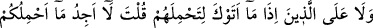
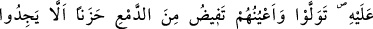
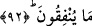

bir günah yoktur. Uymaları gereken en önemli hususlar şunlardır: Gâzîler hakkında
duydukları yalan haberleri yaymamak. Fitne çıkarmamak. Hayırlı ve iyi haberleri
mücâhidlere ulaştırmaya çalışmak. Mücâhidlerin evlerindeki gerekli işleri yürütmek.
Mücâhidlerin geride bıraktıkları âile fertleri ile ilgili sevindirici haberleri mücâhidlere
ulaştırmaya çalışmak.
“İyilik edenlerin aleyhine bir yol yoktur.” ifadesi, önce geçen cümlenin mânasını
pekiştiren yeni bir cümledir. Yani, onlara bir günah olmadığı gibi onları cezalandırmaya
da bir yol yoktur. Burada zamir kullanılabileceği halde “iyilik edenlere (muhsinlere)”
buyurularak, savaşa iştirak edemeyen mazeretli müminlerin Allah’a ve Rasûlü’ne karşı
samimi olmaları sayesinde “iyilik edenler” sınıfına gireceklerine işaret edilmiştir. Bir
hükmün uygun bir vasfa bağlanması, o vasfın o hükme illet olduğunu gösterir” diye
meşhur bir kaide vardır.
“Allah, bağışlayan esirgeyendir.” Bu cümle, savaşa katılmayanların her ne kadar
makul bir özür sebebiyle katılmamış olsalar da Allah tarafından bağışlanmaya muhtaç
olduklarına işâret etmektedir. Çünkü insan daima günah ve acziyet içerisindedir.
Dolayısıyla onu ancak Allah tarafından affedilmek kurtarabilir.
Mesnevî’de şöyle denilmiştir:
Güneş yeryüzünün midesini ısıttı
Yer de o pislikleri yedi bitirdi
Onlar toprağın cüzleri oldu, ondan bitkiler bitti
İşte Allah kötülükleri böyle yok eder
Ben de çirkinim, bütün huylarım da çirkin
O beni diken olarak dikti, ben nasıl gül olabilirim?
Dikene gülün güzelliğinin ilkbaharını ver
Şu yılana tavusun süsünü bağışla
92. Kendilerine binek sağlaman için sana geldikleri zaman sen: “Sizi bindirecek
bir şey bulamıyorum.” deyince,” (ihtiyaç duydukları şeyleri senin yanında
bulamadıklarından onları satın almak için) “harcayacak bir şey bulamadıklarından
dolayı üzüntüden gözlerinden yaş aka aka dönen kimselerin aleyhine de (yol
yoktur. Onlar da kınanmazlar.).
“Kendilerine binek sağlaman için sana geldikleri zaman…”